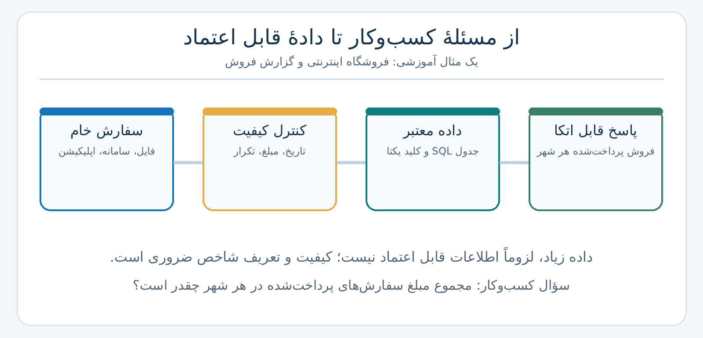
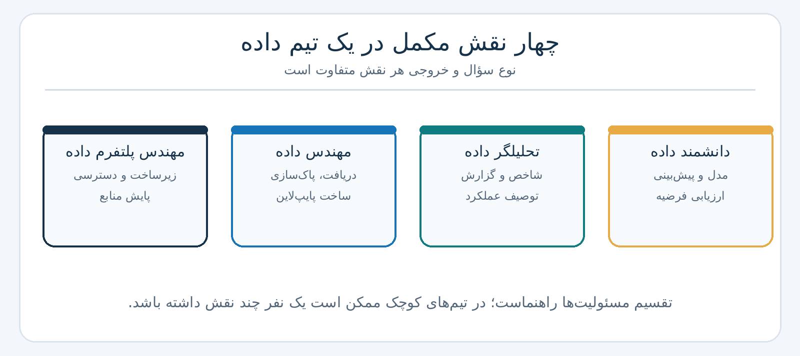
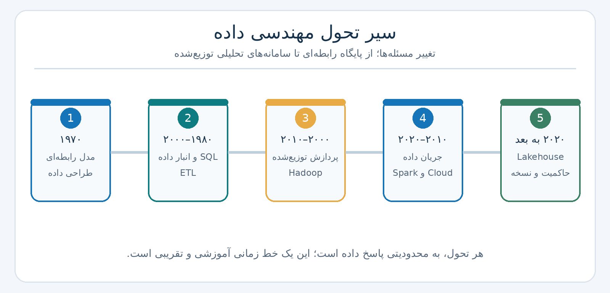
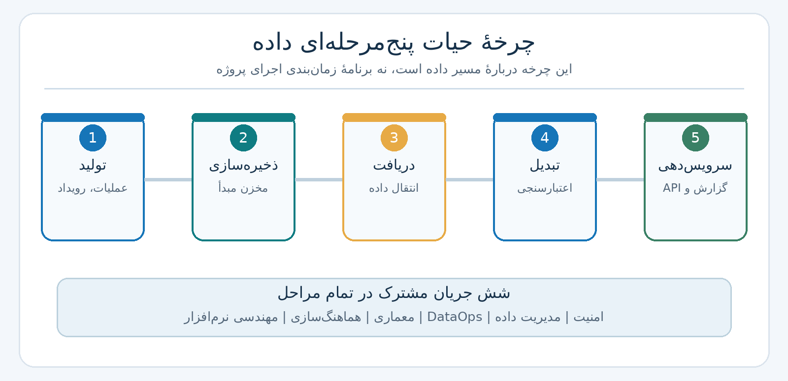
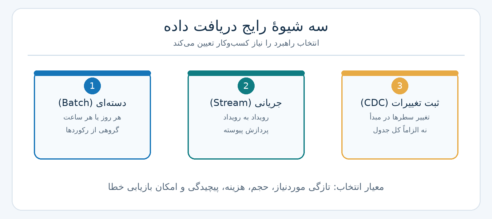
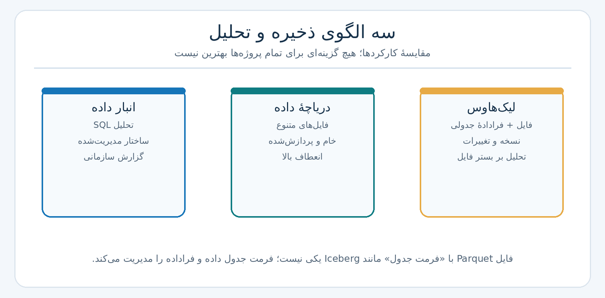
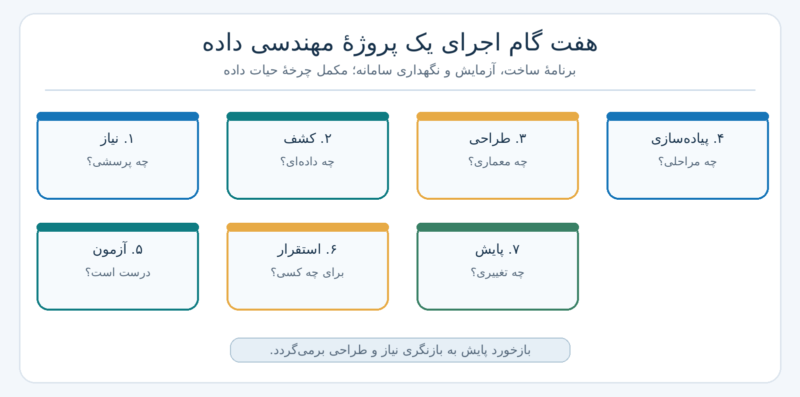
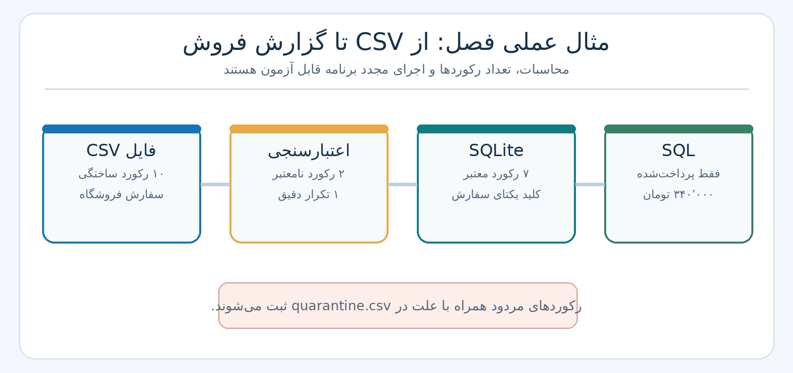

فصل اول: آشنایی با مهندسی داده؛ مفاهیم، چرخهٔ حیات و گردش کار پروژه#
درس: مهندسی داده (Data Engineering)
سطح: مقدماتی دانشگاهی، با پیوند به پایگاه داده، برنامهنویسی و سامانههای نرمافزاری
منبع اصلی: پنج سند فصل اول «راهنمای جامع مهندسی داده» (۱۴۰۵) [م۱] تا [م۵]. موارد توسعهای و مستندات فنی تکمیلی در پایان فصل جدا شدهاند.
هدف این فصل: دانشجو بداند چرا دادهٔ خام بهتنهایی برای تصمیمگیری کافی نیست، مهندس داده دقیقاً چه چیزی میسازد، داده چه مراحلی را طی میکند و یک پروژهٔ کوچک را چگونه از مسئله تا نتیجهٔ قابل آزمایش پیش میبرد. نمونههای عددی و سفارشهای این فصل ساختگی و آموزشی هستند؛ نتایج آنها آمار یک کسبوکار واقعی نیست.
۱. مسئلهای که مهندسی داده باید حل کند#
فرض کنید مدیر یک فروشگاه اینترنتی میپرسد: «امروز در هر شهر چه مقدار فروش پرداختشده داشتهایم؟» سؤال ساده به نظر میرسد. فروشگاه فهرستی از سفارشها دارد، درگاه پرداخت وضع تراکنش را ثبت میکند، سامانهٔ ارتباط با مشتری نام و شهر خریدار را نگه میدارد و بخش پشتیبانی نیز لغو یا برگشت سفارش را میبیند. اگر همین لحظه چهار کارمند با چهار فایل مختلف گزارش تهیه کنند، ممکن است چهار جواب متفاوت ارائه شود.
اختلاف الزاماً از خطا در جمع زدن نیست. شاید یک گزارش، سفارشهای «در انتظار پرداخت» را هم شمرده باشد؛ دیگری سفارشهای لغوشده را حذف نکرده باشد؛ فایل سوم، یک سفارش را دو مرتبه دریافت کرده باشد؛ یا تاریخ در دو منبع به دو صورت ثبت شده باشد. تا وقتی معنای «فروش»، زمان مرجع، کلید سفارش و قواعد کیفیت مشخص نباشد، جمع سادهٔ اعداد نیز قابل اتکا نیست.
در مثال کوچک این فصل، دادهٔ ورودی یک فایل CSV از سفارشهای ساختگی است. چهار مسئله عمداً در آن وجود دارد: یک سفارش تکراری، یک مبلغ خالی، یک مبلغ منفی و یک قالب تاریخ متفاوت. پرسش کسبوکار را به این قرارداد قابل اجرا تبدیل میکنیم:
هر سفارش با
order_idمشخص میشود و هر شناسه فقط یک رکورد معتبر دارد.وضعیتها عبارتاند از
paid(پرداختشده)،pending(در انتظار) وcanceled(لغوشده). فقطpaidدر شاخص این مثال محاسبه میشود.مبلغ در ستون
amount_tomanیک عدد صحیح غیرمنفی و بیانگر مبلغ کل همان سفارش است؛ نه قیمت یک قلم کالا.گزارش، مجموع مبلغ سفارشهای پرداختشده را بر اساس شهر نشان میدهد؛ بنابراین هنوز معادل درآمد خالص حسابداری نیست.
تاریخ ورودی به قالب یکسان
YYYY-MM-DDتبدیل میشود. برای این تمرین دو قالب از پیش تعریف شدهاند و تاریخ مبهم بهصورت حدسی تفسیر نمیشود.


Fig. 1 شکل ۱-۱ — مسئلهٔ فروشگاه ابتدا با تعریف شاخص حل میشود، سپس با کنترل و پردازش داده. جابهجایی فایل بدون این قواعد پاسخ معتبر تولید نمیکند.#
این مسیر نمونهای از یک خط لولهٔ داده (Data Pipeline) است: مجموعهای از کارهای مشخص که داده را از مبدأ به شکل مصرفپذیر تبدیل میکند. خط لوله فقط یک برنامهٔ کپی فایل نیست؛ قواعد تبدیل، ثبت خطا، امکان اجرای دوباره و آزمون نتیجه نیز بخشی از آن است. هر بار که از «خط لوله» صحبت میکنیم، باید بتوانیم بگوییم ورودی، خروجی، قرارداد کیفیت و مصرفکنندهٔ آن چیست.
پیوند با دانستههای قبلی#
اگر در برنامهنویسی با فایل و تابع آشنا باشید، بخش دریافت و تبدیل را میشناسید. اگر SQL خواندهاید، میدانید جدول، کلید اصلی و پرسوجو چه هستند. در مهندسی داده این دو دانش را به هم وصل میکنیم: برنامه داده را از منبع میگیرد، قواعد آن را اعتبارسنجی میکنند، پایگاه داده آن را نگه میدارد و پرسوجو پاسخ مسئله را میسازد. مفاهیم مقدماتی Python، پایگاه دادهٔ رابطهای، خط فرمان و ارتباط بین سرویسها برای ادامهٔ درس مفیدند؛ تسلط بر همهٔ آنها شرط خواندن این فصل نیست [م۱].
خروجیهای یادگیری#
پس از پایان فصل باید بتوانید (۱) مهندسی داده را با یک مثال تعریف و از تحلیل، علم داده و مهندسی پلتفرم تمیز دهید؛ (۲) پنج مرحلهٔ چرخهٔ حیات و شش جریان پشتیبان آن را توضیح دهید؛ (۳) میان Batch، Stream و CDC تفاوت بگذارید؛ (۴) نقش مدل رابطهای، پردازش توزیعشده و معماریهای نوین را در تحولات تاریخی بیان کنید؛ (۵) هفت گام طراحی تا نگهداری پروژه را به یک مسئله پیوند بزنید؛ و (۶) یک نمونهٔ Python/SQLite را اجرا و صحت آن را بررسی کنید.
۲. مهندسی داده چیست و چه چیزی نیست؟#
مهندسی داده (Data Engineering) طراحی، ساخت، آزمون و نگهداری سامانههایی است که داده را از منبعهای گوناگون دریافت میکنند، به آن ساختار و کیفیت مناسب میدهند، بهصورت امن و پایدار نگه میدارند و در زمان موردنیاز در اختیار مصرفکننده میگذارند [م۱، م۲]. «مصرفکننده» میتواند انسانِ تحلیلگر، یک داشبورد، یک برنامه یا مدل یادگیری ماشین باشد.
در این تعریف، چهار قید مهم وجود دارد: دادهٔ درست، زمان مناسب، شکل قابل استفاده و دسترسی برای فرد یا سامانهٔ مجاز. اگر یکی از اینها نباشد، داده شاید موجود باشد اما ارزش عملی چندانی ایجاد نکند. به همین دلیل، حجم داده بهتنهایی شاخص بلوغ نیست. یک فروشگاه با چند هزار سفارش ناقص ممکن است بیشتر از سامانهای با میلیونها سفارش دقیق دچار مشکل شود.
یک تشبیه آموزشی در منابع، رستوران است [م۱]: مواد اولیه از چند تأمینکننده میآیند، پیش از مصرف بررسی میشوند، در محل مناسب نگه داشته میشوند، طبق دستور آماده میشوند و در زمان سفارش به مشتری میرسند. داده نیز منبع، کنترل کیفیت، ذخیرهسازی، تبدیل و تحویل دارد. البته در سامانهٔ واقعی، ذخیرهسازی ممکن است قبل و بعد از تبدیل تکرار شود و ترتیب اجرا همیشه مانند یک آشپزخانهٔ خطی نیست. تشبیه برای فهم مسئولیتها مفید است، نه برای جایگزین کردن طراحی دقیق.
۲.۱. تفاوت با چهار نقش نزدیک#


Fig. 2 شکل ۱-۲ — چهار نقش مکمل در تولید ارزش از داده. مرز شغلی در همهٔ سازمانها یکسان نیست؛ ملاک، مسئولیت و خروجی اصلی است.#
نقش |
سؤال محوری |
خروجی رایج در مثال فروشگاه |
|---|---|---|
مهندس داده ( |
دادهٔ قابل اتکا از کجا و چگونه برسد؟ |
جدول سفارشهای معتبر و خط لولهٔ قابل تکرار |
تحلیلگر داده ( |
چه اتفاقی افتاده و چرا؟ |
گزارش فروش روزانه و مقایسهٔ شهرها |
دانشمند داده ( |
احتمالاً چه اتفاقی خواهد افتاد؟ |
مدل پیشبینی تقاضا یا ریزش مشتری |
مهندس پلتفرم داده ( |
زیرساخت اجرای ایمن و مقیاسپذیر چگونه فراهم شود؟ |
محیط اجرا، دسترسی، پایش منابع و سرویسهای مشترک |
برای مثال، تحلیلگر میتواند بپرسد چرا فروش تهران کم شده است؛ اما اگر شناسههای تکراری در جدول وجود داشته باشند، نتیجهٔ او گمراهکننده میشود. مهندس داده پیش از تحلیل، معنا و صحت جدول را کنترل میکند. دانشمند داده ممکن است با همان جدول مدل پیشبینی بسازد؛ او نیز به دادهٔ سالم نیاز دارد. مهندس پلتفرم کمک میکند این کارها در محیطی پایدار انجام شوند. در تیم کوچک ممکن است یک نفر چند مسئولیت داشته باشد؛ این جدول مرزبندی مطلق افراد نیست.
۲.۲. سه مسئلهٔ اساسی: پراکندگی، کیفیت و رشد#
پراکندگی و ناسازگاری معنا: شناسهٔ مشتری در وبسایت ممکن است با شناسهٔ حسابداری متفاوت باشد. حتی واژهٔ «فروش» میتواند در بخش سفارش، پرداخت و حسابداری سه معنی داشته باشد. اتصال جدولها بدون توافق دربارهٔ معنا، خطای پنهان ایجاد میکند. لازم است کلیدهای رابطه، زمان رویداد و واحد مبلغ ثبت شوند.
کیفیت: مقدار خالی، تاریخ نامعتبر یا رکورد تکراری هرکدام سیاست جداگانه میخواهند. حذف خودکار تمام رکوردهای ناقص همیشه درست نیست. برای نمونه، اگر شهر خالی باشد ولی مبلغ صحیح باشد، میتوان رکورد را برای گزارش کلی حفظ و فقط از گزارش شهری کنار گذاشت؛ یا بنا بر قرارداد از کل تحلیل کنار گذاشت. مهم آن است که تصمیم ثبت و قابل بازبینی شود. دو مشتری همنام الزاماً یک مشتری نیستند؛ حذف آنها بر مبنای نام، نمونهٔ روشن یک «اصلاح» خطرناک است [م۲].
رشد و پایداری: با افزایش حجم و تعداد منابع، اجرای دستی فایلها، خطاهای مقطعی شبکه و تغییر ساختار داده مشکلساز میشود. اما «دادهٔ بزرگ» فقط به تعداد بایتها مربوط نیست: نیاز به پاسخ چندمیلیثانیهای یا پیچیدگی تغییرات schema حتی در حجم کمتر نیز معماری را دشوار میکند. انتخاب سامانهٔ توزیعشده باید با نیاز اثبات شود، نه با نام ابزار.
۲.۳. شش بعد کاربردی کیفیت داده#
بعد |
پرسش |
نمونهٔ کنترل |
|---|---|---|
درستی ( |
مقدار با واقعیت مطابقت دارد؟ |
تطبیق مبلغ با سند پرداخت؛ فقط از روی نوع عدد نمیتوان آن را اثبات کرد |
کاملبودن ( |
مقدار لازم ثبت شده است؟ |
خالی نبودن شناسه، شهر یا مبلغ در قرارداد این مثال |
بههنگامبودن ( |
داده با تأخیر قابل قبول رسیده است؟ |
آخرین زمان دریافت، در قیاس با نیاز گزارش |
سازگاری ( |
منابع و نمایشهای مختلف با هم ناسازگار نیستند؟ |
همهٔ تاریخها در یک قالب، وضعیتها در یک واژگان |
اعتبار ( |
مقدار قاعدهٔ دامنه و قالب را رعایت میکند؟ |
مبلغ صحیح و غیرمنفی؛ وضعیت از مجموعهٔ تعریفشده |
دسترسپذیری ( |
مصرفکنندهٔ مجاز میتواند داده را دریافت کند؟ |
موفقیت پرسوجو و سطح دسترسی مناسب |
این ابعاد با هم یکی نیستند. برای مثال، مبلغ 120000 از نظر اعتبار قالب قابل قبول است، ولی بدون مقایسه با درگاه پرداخت، درستی واقعی آن معلوم نیست. همچنین یک فایل کامل اما با تأخیر دو روزه ممکن است برای گزارش لحظهای نامناسب باشد. در نمونهٔ عملی، قالب، تکرار و قواعد دامنه را میسنجیم؛ ادعای تطبیق با واقعیت بیرونی نداریم.
یک نسبت آموزشی برای بررسی کیفیت، «درصد رکوردهای پذیرفتهشده» است:
[ R*{\mathrm{accept}}=\frac{N*{\mathrm{valid\ unique}}}{N_{\mathrm{input}}}\times100%. ]
در دادهٔ ساختگی ما، ۱۰ ردیف ورودی داریم: ۷ ردیف معتبر یکتا، ۱ ردیف تکراری دقیق و ۲ ردیف مردود. بنابراین (R_{\mathrm{accept}}=7/10=70%). این شاخص داخلی خط لوله است و بهتنهایی معادل «کیفیت کل داده» نیست. رکورد تکراری الزاماً غلط تجاری نیست؛ فقط قرار نیست برای یک شناسه دو بار ذخیره شود.
۳. تاریخچه را از زاویهٔ مسئله بخوانیم#
سیر تاریخی مهندسی داده را بهتر است به صورت «چه محدودیتی داشتیم و چه راهحلی مطرح شد؟» ببینیم؛ نه فهرست نام محصولات [م۳].


Fig. 3 شکل ۱-۳ — خط زمان تقریبی تحول راهکارهای داده. دورهها روی یکدیگر همپوشانی دارند و ابزارهای جدید معمولاً جای تمام راهکارهای پیشین را نمیگیرند.#
۳.۱. از فایل مستقل به مدل رابطهای#
در سامانههای اولیه، داده اغلب در فایلها یا ساختارهای سلسلهمراتبی و شبکهای نگهداری میشد. وابستگی برنامه به نحوهٔ ذخیرهسازی، توسعه و تغییر را دشوار میکرد. معرفی مدل رابطهای توسط ادگار کاد (E. F. Codd) در ۱۹۷۰، نگاه تازهای پیشنهاد داد: داده به شکل رابطهها (در عمل جدولهایی با سطر و ستون) دیده شود و پرسوجو بر «چه میخواهیم» تمرکز کند، نه مسیر پیمایش فایلها. مدل موجودیت–رابطه (ER) که پیتر چن در ۱۹۷۶ مطرح کرد، به طراحی مفهومی این دادهها کمک کرد [م۳].
وقتی سفارش، مشتری و پرداخت سه جدول باشند، میتوان آنها را با کلیدهای مشخص مرتبط کرد. این ساختار و قواعد تمامیت داده، پیشنیاز مهم گزارش معتبر است. سامانههای رابطهای در دهههای ۱۹۸۰ و ۱۹۹۰ فراگیر شدند؛ SQL نیز در ۱۹۸۶ استاندارد ANSI و در ۱۹۸۷ استاندارد ISO گرفت [م۳]. این تاریخچه توضیح میدهد چرا تا امروز کلید، رابطه، تراکنش و پرسوجو از واژگان اصلی مهندسی داده هستند.
۳.۲. انبار داده و ETL: چرا دادهٔ عملیاتی برای تحلیل کافی نبود؟#
پایگاه سفارش آنلاین برای ثبت سریع سفارش و تغییر وضعیت آن طراحی شده است. گزارش مدیریتی ممکن است نیاز داشته باشد میلیونها سفارش چند سال گذشته را با اطلاعات شعب، کمپین و مشتری ترکیب کند. اگر تمام گزارشها به پایگاه عملیاتی فشار بیاورند، سرعت ثبت سفارش نیز آسیب میبیند. پاسخ رایج، انبار داده (Data Warehouse) برای تحلیل سازمانی و اجرای فرایندهای استخراج، تبدیل و بارگذاری (ETL) بود. این تمایز بین کار عملیاتی و تحلیلی هنوز مهم است؛ لازم نیست هر مسئله را با فناوری تازه حل کنیم.
۳.۳. دادهٔ عظیم و پردازش توزیعشده#
با رشد وب و فایلهای بسیار بزرگ، یک رایانه دیگر برای تمام کارها کافی نبود. ایدهٔ MapReduce که گوگل در ۲۰۰۴ توصیف کرد، تقسیم کار روی چند ماشین را روشن ساخت؛ زیستبوم Hadoop نیز ذخیره و پردازش توزیعشده با تحمل خرابی را فراگیرتر کرد. مهمترین شهود این است که بهجای انتقال همهٔ داده به یک پردازنده، کار را به بخشها تقسیم میکنیم و نتایج جزئی را جمع میکنیم [م۳].
مثال دستی MapReduce: تعداد سفارشهای سه شهر را میخواهیم. دادهٔ ورودی Tehran, Isfahan, Tehran, Shiraz, Tehran است.
Map: هر شهر به یک جفت
(شهر، 1)تبدیل میشود.Shuffle/Group: جفتهای دارای شهر یکسان کنار هم قرار میگیرند: تهران
[1,1,1]، اصفهان[1]، شیراز[1].Reduce: مقادیر هر گروه جمع میشوند: تهران ۳، اصفهان ۱، شیراز ۱.
این الگوریتم شمارش را روی پنج مورد میتوان دستی انجام داد؛ مزیت پردازش توزیعشده زمانی آشکار میشود که تقسیم داده، هماهنگی ماشینها و بازیابی خرابی در مقیاس بزرگ لازم باشد. تقسیم کار مجانی نیست: انتقال داده، ترتیببندی و هماهنگی هزینه دارند.
۳.۴. جریان رویداد، رایانش ابری و جداسازی ذخیره از پردازش#
گزارش روزانه با تأخیر یک روز ممکن است کافی باشد؛ اما تشخیص تقلب پرداخت یا شمارش رویدادهای زنده نیاز دیگری دارد. در دههٔ ۲۰۱۰، چارچوبهایی مانند Spark برای پردازش داده و Kafka برای انتقال/نگهداری جریان رویدادها شناخته شدند؛ ابزارهایی مانند Airflow برای زمانبندی و هماهنگی گردش کار و dbt برای ساماندهی تبدیلهای تحلیلی رواج یافتند [م۳].
همزمان، خدمات ابری و معماریهایی با جداسازی منطقی منابع پردازش از فضای ذخیرهسازی انتخابهای جدیدی فراهم کردند. در سامانههایی مانند BigQuery و Snowflake، کاربر معمولاً لازم نیست مدیریت سختافزار را مانند یک خوشهٔ سنتی انجام دهد؛ اما هزینه، طراحی داده و کنترل دسترسی همچنان بر عهدهٔ تیم است. «ابری» مترادف «بدون طراحی» نیست.
۳.۵. نتیجهٔ تاریخی#
هیچیک از این نسلها کاملاً منسوخ نشدهاند. برای ده ردیف سفارش، SQLite و یک برنامهٔ کوچک بهترین ابزار آموزشیاند. برای صدها منبع و میلیاردها رویداد، قابلیتهای توزیع، بازیابی و هماهنگی اهمیت بیشتری پیدا میکنند. بنابراین سؤال مهندس داده نباید «جدیدترین ابزار چیست؟» باشد، بلکه باید بپرسد «چه محدودیتی داریم که راهحل سادهتر از عهدهٔ آن برنمیآید؟»
۴. چرخهٔ حیات داده: پنج مرحله، نه پنج برنامهٔ جداگانه#
مدل چرخهٔ حیات (Data Engineering Lifecycle) در منابع اصلی این فصل، پنج مرحله دارد: تولید → ذخیرهسازی → دریافت → تبدیل → سرویسدهی [م۴]. این ترتیب در نگاه نخست غیرمنتظره است: چرا «ذخیرهسازی» پیش از «دریافت» آمده است؟ زیرا منظور از ذخیرهسازی در این مدل، نخست ذخیرهشدن داده در سامانهٔ تولیدکننده نیز هست. سفارش ابتدا در پایگاه عملیاتی ذخیره میشود، سپس خط لوله آن را دریافت میکند. در مقصد نیز ممکن است پس از تبدیل، چند بار دیگر ذخیرهسازی رخ دهد. این مدل یک نقشهٔ مفهومی است، نه دستورالعمل اجباری اجرای خطی.


Fig. 4 شکل ۱-۴ — مدل پنجمرحلهای چرخهٔ حیات و شش جریان مشترک. شمارهها ترتیب آموزشیاند؛ مسیر واقعی ممکن است چرخهها و ذخیرههای میانی داشته باشد.#
۴.۱. مرحلهٔ تولید (Generation)#
داده در جایی ایجاد میشود: ثبت سفارش در پایگاه عملیاتی، کلیک کاربر در برنامه، پیام حسگر، لاگ سرور، رویداد دستگاه یا پاسخ یک سرویس. منبع میتواند ساختیافته (جدول سفارش)، نیمهساختیافته (رویداد JSON) یا غیرساختیافته (متن آزاد و تصویر) باشد. این تقسیم، نوع محتوا را شرح میدهد؛ برای مثال JSON همیشه از نظر معنا معتبر نیست، اگرچه قالبی ساختاریافته دارد.
در همین مرحله باید پرسید «رویداد دقیقاً چه معنایی دارد؟» آیا paid هنگام شروع پرداخت ثبت میشود یا پس از تأیید بانک؟ آیا زمان ثبت سفارش با زمان تأیید پرداخت یکی است؟ اگر این تفاوت را در مبدأ ندانیم، هیچ مقدار پاکسازی در ادامه معنای صحیح ایجاد نمیکند.
۴.۲. مرحلهٔ ذخیرهسازی (Storage)#
سامانهٔ تولیدکننده سفارش را معمولاً در پایگاه عملیاتی مینویسد. بعداً داده ممکن است به انبار داده، دریاچه یا مخزن دیگر انتقال یابد. برای هر محل ذخیره باید به ماندگاری، بازیابی، پشتیبانگیری، زمان نگهداری، دسترسی، هزینه و تغییر schema توجه کرد. ذخیرهسازی فقط انتخاب بین «فایل» و «جدول» نیست. اگر فردا یک ستون اختیاری اضافه شود، باید معلوم باشد مصرفکنندهٔ قدیمی چگونه رفتار میکند.
برای رویدادها، سامانهای مانند Kafka میتواند داده را برای مدت تنظیمشده نگه دارد تا مصرفکنندهٔ عقبمانده دوباره آن را بخواند. بنابراین نگاه به چنین سامانهای صرفاً بهصورت «صفی که پس از خواندن حذف میشود» ناقص است [م۴]. انتخاب زمان نگهداری، فضای لازم و امکان بازپخش داده را تعیین میکند.
۴.۳. مرحلهٔ دریافت (Ingestion)#
دریافت، ورود داده از منبع به مسیر پردازش و تحلیل است. سه الگوی مهم را باید جدا کرد:


Fig. 5 شکل ۱-۵ — سه شیوهٔ دریافت داده؛ CDC شیوهٔ مشاهدهٔ تغییرات منبع است و میتواند به سامانهٔ جریانی یا فرایندهای دورهای خوراک بدهد.#
روش |
چه چیزی دریافت میشود؟ |
مناسب چه مسئلهای است؟ |
ملاحظه |
|---|---|---|---|
دستهای ( |
مجموعهای از رکوردها در زمانهای معین |
گزارش روزانه و انتقال فایل |
ممکن است فقط تغییرات دوره منتقل شود، نه لزوماً کل جدول |
جریانی ( |
رویدادها بهصورت پیوسته یا با تأخیر کم |
هشدار و تحلیل نزدیک به زمان واقعی |
ترتیب، دادهٔ دیررس و بازیابی باید طراحی شوند |
ثبت تغییرات ( |
درج، تغییر یا حذف دادهٔ مبدأ |
همگامسازی پایگاه عملیاتی و تحلیلی |
از لاگ تراکنش، مقایسه/پرسوجو یا روشهای دیگر قابل پیادهسازی است |
مثلاً برای گزارش فروش فردا صبح، دریافت فایل شبانه کافی است. برای مسدودسازی لحظهای پرداخت مشکوک ممکن است چند ثانیه تأخیر هم زیاد باشد. پس تازگی موردنیاز (Freshness) را باید با هزینه و پیچیدگی سنجید. جریان رویداد لزوماً به معنی پاسخ بیدرنگ با تأخیر صفر نیست؛ هر سامانه محدودیت فیزیکی و عملیاتی دارد.
۴.۴. مرحلهٔ تبدیل (Transformation)#
تبدیل، تغییر شکل و معنای داده برای هدف مشخص است: اصلاح قالب تاریخ، بررسی مقادیر، تبدیل نوع، حذف تکرار طبق کلید معتبر، ترکیب چند منبع، ساخت شاخص و تجمیع. در مثال ما رشتهٔ تاریخ 15/10/2026 طبق قرارداد روز/ماه/سال به 2026-10-15 تبدیل میشود. مبلغ خالی به صفر تغییر نمیکند، چون «معلوم نبودن مبلغ» با «مبلغ صفر» یکسان نیست.
از دید ریاضی، اگر ردیفهای ورودی را (D) و قواعد تبدیل را (T) بنامیم، خروجی (D’=T(D)) است. درستی صرفاً به اجرای بدون خطا محدود نمیشود: باید بتوان دربارهٔ (T) یک یا چند ویژگی قابل آزمون نوشت؛ مثلاً «هیچ سطر ذخیرهشدهای مبلغ منفی ندارد» یا «یک شناسهٔ سفارش بیش از یک بار وجود ندارد». این ویژگیها را بعداً با SQL و آزمون برنامه بررسی میکنیم.
۴.۵. مرحلهٔ سرویسدهی (Serving)#
در مرحلهٔ آخر، داده در شکل مناسب به مصرفکننده میرسد: جدول تحلیلی، داشبورد، گزارش، سرویس API یا ویژگیهای ورودی مدل. گاهی دادهٔ تحلیلی به یک سامانهٔ عملیاتی بازگردانده میشود؛ به این الگو در کاربرد مناسب Reverse ETL میگویند. معیار موفقیت «ساخته شدن جدول» نیست، بلکه پاسخگویی دقیق، بهموقع و قابل تکرار به یک نیاز مشخص است [م۴].
در مثال فروشگاه، خروجی نهایی دو سطر گزارش شهری است. اگر پرسوجو درست باشد ولی کاربر مربوط به گزارش دسترسی نداشته باشد، چرخه از نظر سرویسدهی کامل نشده است. برعکس، اگر همه به اطلاعات فردی مشتری دسترسی داشته باشند، سرویسدهی از نظر امنیتی اشتباه طراحی شده است.
۴.۶. ETL و ELT را با چرخهٔ حیات اشتباه نگیریم#
ETL مخفف استخراج → تبدیل → بارگذاری است؛ ابتدا داده از مبدأ خوانده میشود، پیش از بارگذاری نهایی تبدیل میشود، سپس در مقصد قرار میگیرد. ELT یعنی استخراج → بارگذاری → تبدیل؛ داده ابتدا در محیط مقصد نگهداری میشود و سپس تبدیل در همان محیط انجام میگیرد. تفاوت اصلی محل و ترتیب اجرای تبدیل نسبت به بارگذاری مقصد است، نه اینکه یکی کیفیت داده دارد و دیگری ندارد. هر دو به کنترل دسترسی، کیفیت و ثبت منشأ نیاز دارند.
در مثال فصل، پیش از ورود به جدول نهایی SQLite اعتبارسنجی انجام میدهیم؛ این به الگوی سادهٔ ETL نزدیکتر است. اگر ابتدا ردیفهای خام را در جدول raw_orders بارگذاری میکردیم و سپس با SQL جدول نهایی را میساختیم، نمونهای از ELT داشتیم. در هر دو حالت، ذخیرهٔ منبع و دادهٔ خام میتواند باقی بماند؛ این دو اصطلاح جایگزین «چرخهٔ حیات پنجمرحلهای» نیستند.
۵. ذخیرهسازی برای تحلیل: انبار داده، دریاچه و لیکهاوس#
پس از شناخت چرخه، باید میان سه شیوهٔ سازماندهی داده تمایز بگذاریم. در هر سه حالت ممکن است داده روی دیسک یا فضای ابری ذخیره شود؛ تفاوت اصلی در نوع سازماندهی، قواعد مدیریت و شیوهٔ مصرف است. جدول زیر تعریفی مقدماتی ارائه میکند، نه یک تقسیمبندی مطلق [م۳، م۴].


Fig. 6 شکل ۱-۶ — سه الگوی نگهداری داده با هدفهای متفاوت. ابزار پیادهسازی ممکن است قابلیتهای بیش از یک الگو را داشته باشد.#
الگو |
مفهوم ساده |
نقطهٔ قوت |
ملاحظه |
|---|---|---|---|
انبار داده ( |
دادهٔ سازماندهیشده برای پرسوجو و گزارش |
مدلسازی، SQL و گزارشهای پایدار |
برای فایلهای بسیار متنوع ممکن است به آمادهسازی بیشتر نیاز داشته باشد |
دریاچهٔ داده ( |
نگهداری فایلهای متنوع، خام یا آماده |
پذیرش نوعهای مختلف و جداسازی ذخیره از پردازش |
بدون کاتالوگ، قواعد و مدیریت کیفیت میتواند به انبار فایلهای غیرقابل اعتماد تبدیل شود |
لیکهاوس ( |
تحلیل جدولی بر بستر فایلها همراه با فراداده و قواعد مدیریت جدول |
ترکیب قابلیتهای فایل و جدول، نسخهبندی و کنترل تغییر |
نیازمند طراحی کاتالوگ، قالب جدول و سازگاری موتورهای پردازش |
۵.۱. تفاوت «فایل»، «مدل داده» و «قالب جدول»#
یک فایل CSV صرفاً ترتیب ستونها و متن رکوردها را نگه میدارد؛ خودش قاعدهٔ کلید اصلی و تراکنش چندفایلی ارائه نمیکند. فایل ستونی Parquet برای ذخیره و خواندن تحلیلی کارآمدتر است، اما وجود چند فایل Parquet بهتنهایی یک جدول تراکنشی نسخهدار ایجاد نمیکند. قالبهای جدول مانند Apache Iceberg، Delta Lake و Apache Hudi، در کنار فایلهای داده، فرادادهای برای مدیریت وضعیت جدول، تغییرات و در مواردی نماهای زمانی و عملیات بهروزرسانی فراهم میکنند. جزئیات دقیق امکانات، نسخه و موتور اجرا متفاوت است [م۳؛ و۱، و۴].
مثال: فرض کنید سفارش شمارهٔ ۱۰۰۲ امروز بهروز شده است. اگر فقط یک پوشه شامل صدها فایل Parquet داشته باشیم، باید بدانیم کدام فایل شامل نسخهٔ صحیح آن است، کدام فایل حذف یا جایگزین شده و یک پرسوجوی همزمان باید چه تصویری از داده ببیند. قالب جدول برای مدیریت چنین وضعیتهایی قرارداد فراداده فراهم میکند. در مستندات رسمی Iceberg، هر وضعیت ثبتشدهٔ جدول با Snapshot و مجموعهای از ارجاعات به فایلها مشخص میشود؛ تغییر وضعیت جدول با انتشار فرادادهٔ جدید انجام میشود [و۴].
همچنین این سه مفهوم متفاوتاند:
قالب فایل (
File Format): بایتهای یک فایل چگونه ثبت شدهاند؟ مانند CSV و Parquet.طرحواره (
Schema): چه ستونهایی با چه نام، نوع و محدودیتهایی داریم؟ برای مثالorder_id INTEGER.مدل داده (
Data Model): موجودیتها و رابطهٔ معنایی آنها چیست؟ مثلاً هر سفارش به یک مشتری تعلق دارد و هر سفارش میتواند چند قلم داشته باشد.
ممکن است دو جدول طرحوارهٔ یکسان داشته باشند اما معنای تجاری متفاوت؛ پس بررسی نام ستون بهتنهایی جایگزین مدلسازی داده نمیشود.
۵.۲. سه قالب جدول مشهور چه نسبتی دارند؟#
Delta Lake، Apache Iceberg و Apache Hudi همگی در خانوادهٔ فناوریهای مدیریت جدولهای مبتنی بر فایل مطرح هستند؛ ولی از نظر قالب فراداده، مسیر تغییرات و پشتیبانی موتورهای خواندن و نوشتن یکسان نیستند. Iceberg بر مشخصات باز قالب جدول، snapshot و مدیریت مستقل داده/فراداده تکیه دارد [و۴]. Delta Lake و Hudi نیز شیوههای خود را برای تراکنشها، نگهداری نسخهها یا تغییرات دارند. نام بردن از این ابزارها در این فصل به معنی انتخاب یکی برای پروژه نیست. وقتی نیاز ما فقط نگهداری ده سفارش است، جدول SQLite انتخاب منطقیتر و قابل آموزشتری است.
۶. الگوهای معماری: چه زمانی کدام پرسش مطرح میشود؟#
معماری داده (Data Architecture) فقط رسم چند مستطیل و پیکان نیست. معماری پاسخ به این پرسشهاست: داده کجا ایجاد میشود؟ چه کسی مالک آن است؟ تا چه زمانی ذخیره میشود؟ چند دقیقه یا چند ساعت تأخیر پذیرفتنی است؟ چگونه خطا بازیابی میشود؟ چه کسانی مجاز به دیدن کدام ستون هستند؟ [م۱، م۳، م۴]
برای جلوگیری از حفظ کردن بیهدف نامها، الگوهای مطرحشده در منابع را بر اساس مسئلهٔ هدف مقایسه میکنیم:
الگو |
مسئلهای که برای آن مطرح شده است |
توضیح آموزشی و احتیاط |
|---|---|---|
|
تلفیق دادهٔ تاریخی دستهای و پاسخ کمتأخیر |
معمولاً مسیر پردازش دستهای و جریانی جدا و لایهٔ ارائه دارد؛ هماهنگ ماندن منطق دو مسیر میتواند دشوار باشد. |
|
کاهش دوگانگی مسیرهای پردازش |
تکیه بر جریان رخدادها و امکان بازپخش تاریخچه؛ مناسب بودن آن به نگهداری رویداد و توان پردازش بستگی دارد. |
|
روشن کردن میزان پالایش و اعتماد داده |
لایههای رایج |
|
دشواری مالکیت و هماهنگی داده در سازمان بزرگ |
نگاه سازمانیِ دامنهمحور، داده بهعنوان محصول، زیرساخت خودخدمت و حاکمیت مشترک؛ صرفاً انتقال فایل بین تیمها نیست. |
|
تحلیل مطمئن روی بستر فایلهای مقیاسپذیر |
الگوی ذخیره/تحلیل با مدیریت جدولی؛ با Medallion تضاد ندارد و میتوان هر دو را با هم داشت. |
مثال برای تفاوت: اگر قرار است فهرست رویدادهای سفارش برای تولید آمار هر ۱۰ ثانیه پردازش شود، مسئلهٔ جریان رویداد مطرح میشود. اگر همزمان باید گزارش دقیق ماهانه و پاسخ خیلی سریع داشت، طراحی Lambda یا روشهای معادل مطرح میشوند. اگر اصل مشکل این است که «هیچکس نمیداند دادهٔ مشتری را کدام تیم تأیید میکند»، Data Mesh و مالکیت داده پرسش سازمانی را برجسته میکنند؛ افزودن Kafka بهتنهایی آن را حل نمیکند.
۶.۱. مثال کوتاه دربارهٔ Medallion#
برای فروشگاه میتوان سه سطح مفهومی تعریف کرد:
خام (Bronze): ردیفهای دریافتی CSV با منبع، تاریخ ورود و شناسهٔ فایل حفظ شوند؛ حتی ردیفهای مسئلهدار برای بررسی قابل دسترسی باشند.
اعتبارسنجیشده (Silver): شناسهٔ سفارش یکتا، تاریخ استاندارد و مقدار معتبر شده باشد؛ رکوردهای ردشده همراه با دلیل در محل جداگانه ثبت شوند.
آمادهٔ مصرف (Gold): خلاصهٔ فروش روزانه و شهری، مطابق تعریف واحد «پرداختشده»، محاسبه شود.
در برنامهٔ مقدماتی این فصل لایهٔ خام، همان فایل CSV اولیه است؛ لایهٔ معتبر، جدول orders در SQLite و لایهٔ مصرف، پرسوجوی گزارش است. ساخت سه پایگاه مستقل ضرورتی ندارد. در سامانهٔ بزرگ، نسخهٔ دادهٔ خام و فرادادهٔ منشأ اهمیت بیشتری پیدا میکند.
۷. شش جریان زیربنایی؛ چیزهایی که محدود به یک مرحله نیستند#
اگر چرخهٔ حیات را به پنج خانه تقسیم کنیم و این شش موضوع را نادیده بگیریم، احتمالاً سامانهای میسازیم که فقط «یک بار روی رایانهٔ توسعهدهنده» کار میکند. در مدل منابع، این حوزهها جریانهای سراسری (Undercurrents) هستند؛ از لحظهٔ تولید تا سرویسدهی در همهٔ مراحل اثر دارند [م۴؛ و۱].
۷.۱. امنیت (Security)#
باید مشخص باشد چه کسی حق خواندن، تغییر دادن یا حذف داده را دارد. در سامانهٔ فروش واقعی، شمارهٔ تماس یا اطلاعات پرداخت نیازمند محافظت بیشتر است. حداقل دسترسی (Least Privilege)، مدیریت امن کلید و رمز، ثبت دسترسی و رمزنگاری مناسب از اصول اصلیاند. برای پروژهٔ این فصل از دادهٔ مصنوعی استفاده میکنیم و هیچ رمز یا کلید دسترسی در بسته قرار نمیدهیم؛ این سادهسازی آموزشی به معنی حذف نیاز امنیتی از پروژهٔ واقعی نیست.
۷.۲. مدیریت و حاکمیت داده (Data Management & Governance)#
باید بدانیم «مالک داده کیست؟»، «این ستون چه معنایی دارد؟»، «منشأ عدد گزارش کدام فایل است؟» و «چه مدت باید نگه داشته شود؟». کاتالوگ داده (Data Catalog) برای توصیف و یافتن منابع، شجرهٔ داده (Lineage) برای دنبال کردن مسیر محاسبه، و مدیریت دادهٔ مرجع (Master Data Management) برای تعریف موجودیتهای مشترک سازمانی کاربرد دارند. مثال: اگر گزارش فروش مقدار 340000 را نشان دهد، باید بتوان گفت از کدام سطرهای paid به دست آمده و چرا سطر pending حذف شده است.
۷.۳. عملیات داده (DataOps)#
DataOps مجموعهای از شیوههای خودکارسازی، آزمون، پایش و بهبود چرخهٔ تولید و انتشار تغییرات خطوط داده است. همانطور که در مهندسی نرمافزار، تغییر کد بدون آزمون خطرناک است، در مهندسی داده تغییر معنی یک ستون یا قالب تاریخ ممکن است یک گزارش را بیسروصدا خراب کند. برای نمونه، اجرای شش آزمون برنامهٔ این فصل نمونهای کوچک از همین نگاه است؛ البته بهتنهایی یک سامانهٔ کامل DataOps نیست.
۷.۴. معماری (Architecture)#
معماری دربارهٔ مرز مسئولیتها، هزینه، دوام، مقیاس، زمان پاسخ، محل پردازش و امکان توسعه است. برای گزارش روزانهٔ ده سفارش، Python + SQLite کافی است؛ برای شبکهٔ ملی صدها شعبه، علاوه بر نیازهای مشابه، احتمالاً باید هماهنگی میان سیستمها، تأخیر شبکه، خرابی گره و قرارداد تغییرات در نظر گرفته شود. مهم این است که نیاز واقعی دلیل انتخاب فناوری باشد.
۷.۵. هماهنگسازی (Orchestration)#
هماهنگسازی یعنی مشخص کنیم کدام کار پس از موفقیت کدام کار انجام شود، اگر کاری شکست خورد چه شود و اجرای مجدد از کجا ادامه یابد. نمودار وابستگی بدون دور (DAG) یک نمایش رایج برای چنین کارهایی است. مثلاً «دریافت فایل» باید پیش از «اعتبارسنجی» و «تولید گزارش» انجام شود. اما خواندن همهٔ مراحل در یک تابع Python لزوماً به ابزار بزرگ زمانبندی نیاز ندارد. برای شروع، ترتیب توابع کافی است؛ با زیاد شدن تعداد کارها و زمانبندیها ابزار هماهنگساز ارزش پیدا میکند.
۷.۶. مهندسی نرمافزار (Software Engineering)#
کد خوانا، نسخهبندی، مدیریت خطا، آزمون خودکار، مستندسازی قرارداد ورودی/خروجی و قابلیت اجرای مجدد، ویژگیهای یک سامانهٔ دادهٔ پایدارند. برای مثال، برنامه نباید هنگام مواجهه با مبلغ خالی بیسروصدا آن را صفر کند یا پس از اجرای دوم تمام سفارشها را دوباره وارد کند. اجرای تکرارپذیر (Reproducibility) یعنی با ورودی، نسخهٔ کد و تنظیمات معلوم بتوان خروجی را بازسازی کرد.
۸. گردش کار پروژه: هفت گام از نیاز تا پایش#
پنج مرحلهٔ چرخهٔ حیات توضیح میدادند داده چه مسیری را طی میکند. هفت گام گردش کار (Project Workflow) توضیح میدهند تیم پروژه چگونه آن سامانه را طراحی، تحویل و نگهداری میکند. یکی جای دیگری را نمیگیرد. حتی اگر مسیر داده از پنج مرحله عبور کرده باشد، بدون آزمون، استقرار و پایش، پروژه پایان نیافته است [م۵].


Fig. 7 شکل ۱-۷ — چرخهٔ ساخت پروژه. خروجی پایش میتواند باعث بازنگری نیازمندی و معماری شود؛ این گامها محدود به اجرای یکباره نیستند.#
گام ۱: تعریف مسئله و قرارداد خدمت#
ابتدا باید به زبان کاربر پاسخ دهیم: چه تصمیمی با این داده گرفته میشود؟ شاخص دقیقاً چیست؟ چه میزان تأخیر مجاز است؟ چه کسی مصرفکننده است؟ از چه حجمی صحبت میکنیم؟ در نمونهٔ این فصل، خواسته «مجموع مبلغ سفارشهای پرداختشده بر اساس شهر برای دادهٔ فایل ورودی» است. فرض میکنیم گزارش پس از پایان بارگذاری فایل تهیه میشود؛ نیازِ چندثانیهای یا برخط نداریم. بنابراین انتخاب فناوری جریانی در این مرحله توجیه ندارد.
یک قرارداد خدمت (SLA) در پروژهٔ واقعی میتواند مشخص کند مثلاً گزارش تا ساعت ۸ هر روز آماده باشد. این عدد باید با ذینفع توافق شود؛ در پروژهٔ آموزشی ما هیچ SLA واقعی تعریف یا اندازهگیری نشده است. همچنین باید بین شاخص کسبوکار (مانند فروش پرداختشده) و شاخص فنی (مانند موفقیت دریافت فایل) تفاوت بگذاریم.
گام ۲: شناخت منبع و کشف داده#
داده از کجا میآید، مسئول آن کیست، چه ستونهایی دارد، چقدر رشد میکند و کدام ردیفها میتوانند تغییر کنند؟ باید نمونهٔ داده را بخوانیم و مشخص کنیم آیا order_id واقعاً کلید یکتای منبع است. در برنامهٔ این فصل، از آن بهعنوان کلید یکتا بهموجب قرارداد نمونهٔ آموزشی استفاده کردهایم. در دادهٔ واقعی ممکن است یک سفارش چند پرداخت یا چند اصلاح داشته باشد و به مدل دیگری نیاز پیدا کنیم.
کشف داده نباید تنها به پنج ردیف اول محدود شود. میتوان فراوانی مقادیر خالی، وضعیتهای نامعتبر، بازهٔ تاریخ، سهم دادهٔ تکراری و تغییر نوع ستونها را بررسی کرد. همچنین لازم است دادهٔ شخصی و محدودیت حقوقی انتشار آن شناخته شود.
گام ۳: طراحی معماری#
اکنون میتوان دربارهٔ اجزا تصمیم گرفت: فایل CSV ورودی، برنامهٔ Python برای دریافت و اعتبارسنجی، پایگاه SQLite برای ثبت سفارش معتبر و SQL برای گزارش. این طراحی ساده، آزمونپذیر و متناسب با حجم است. در صورت نیاز به چند میلیون رویداد در ثانیه یا دسترسپذیری بسیار بالا، طراحی و ابزارها تغییر خواهند کرد؛ اما پیچیدگی اضافه، پیشفرض صحیح آموزشی نیست.
در طراحی باید رفتار خطا معلوم باشد. تصمیم این فصل: رکورد دارای مبلغ نامعتبر یا تاریخ ناشناخته به قرنطینه (Quarantine) میرود؛ نه اینکه بهصورت حدسی اصلاح شود. رکورد تکراریِ دقیق، برای بار دوم وارد جدول نمیشود. اگر یک order_id با محتوای متناقض تکرار شود، بدون قاعدهٔ کسبوکار یکی از آن دو را بر دیگری ترجیح نمیدهیم.
گام ۴: پیادهسازی#
کار را به واحدهای روشن تقسیم میکنیم: خواندن CSV، تبدیل/اعتبارسنجی سطر، ثبت در پایگاه داده، ذخیرهٔ خطاها و ساخت گزارش. ترتیب اجرا مهم است: نباید پیش از ثبت قواعد، مبلغ نامعتبر را در گزارش استفاده کنیم. پرسوجو را نیز از پردازش ورودی جدا نگه میداریم تا گزارش را مستقل از شیوهٔ ورود داده بتوان بررسی کرد.
گام ۵: آزمون#
سه سطح آزمون را از هم جدا کنید. آزمون واحد (Unit Test) روی یک قاعده مثل تبدیل تاریخ تمرکز دارد؛ آزمون یکپارچه (Integration Test) تعامل Python با SQLite را بررسی میکند؛ و آزمون سرتاسری (End-to-End Test) فایل ورودی تا مجموع گزارش را کنترل میکند. آزمون کیفیت داده نیز قوانین رکوردها را میسنجد و میتواند در هر سه سطح حضور داشته باشد. برای مثال باید نشان دهیم اجرای دوم دادهٔ فروش را دوبرابر نمیکند.
گام ۶: استقرار#
انتقال برنامه از محیط توسعه به محیط مورد استفادهٔ دیگران استقرار (Deployment) است. در استقرار واقعی باید نسخهٔ کد، تنظیمات، مسیر داده، مجوز فایلها، برنامهٔ زمانبندی و روش بازگشت به نسخهٔ قبلی مشخص باشد. معمولاً محیط آزمایشی پیش از محیط عملیاتی استفاده میشود. نمونهٔ این فصل فقط روی رایانهٔ محلی اجرا میشود و ادعای استقرار عملیاتی ندارد.
گام ۷: پایش و بازخورد#
پس از اجرا باید بپرسیم: آیا دریافت فایل امروز موفق بوده؟ تعداد رکوردهای مردود ناگهان زیاد شده؟ گزارش تازه است؟ آیا مجموع درآمد نسبت به روزهای قبل بهطرز مشکوک تغییر کرده؟ آیا زمان پردازش افزایش یافته؟ پایش زیرساخت (خطا، زمان، مصرف حافظه) و پایش داده (تازگی، تعداد، کیفیت، انحراف توزیع) مکمل یکدیگرند. اگر گزارش تغییر غیرمنتظره دارد، ممکن است اشکال از یک تغییر کسبوکار باشد، نه خرابی کد. این بازخورد میتواند قرارداد گام اول یا طرح مرحلهٔ سوم را اصلاح کند.
۸.۱. یک جدول برای جلوگیری از اشتباه گرفتن دو چارچوب#
پرسش |
چرخهٔ حیات پنجمرحلهای |
گردش کار هفتمرحلهای |
|---|---|---|
موضوع اصلی |
حرکت و استفادهٔ داده |
روش اجرای پروژه توسط تیم |
آغاز |
تولید داده در مبدأ |
تعریف نیاز و معیار موفقیت |
پایان مفهومی |
سرویسدهی برای مصرفکننده |
پایش، بازخورد و نگهداری |
کیفیت و امنیت |
در سراسر چرخه، بهصورت جریان مشترک |
در طراحی، آزمون، استقرار و پایش |
مثال |
سفارش ثبت میشود، دریافت و گزارش میشود |
تیم نیاز را میپرسد، طراحی میکند، میسازد، تست میکند و نگه میدارد |
نتیجه: پنج مرحله دربارهٔ داده هستند؛ هفت گام دربارهٔ پروژه. در پروژهٔ واقعی این دو همزمان رخ میدهند.
۹. دو مطالعهٔ موردی برای فهم انتخاب معماری#
منابع فصل به نمونههای چندشعبهای و خدمات برخط اشاره میکنند [م۵]. در این بخش آنها را بهعنوان سناریوهای مفهومی بررسی میکنیم، نه نتایج حاصل از اجرای واقعی یا اندازهگیری.
۹.۱. فروشگاه زنجیرهای با هزار شعبه#
فرض کنید هزار شعبه دارای پایگاه سفارش مستقل هستند و مدیران میخواهند فروش شعب را با تأخیر چنددقیقهای ببینند. اگر هر شب یک فایل تجمیعی ارسال شود، ممکن است برای تصمیمهای همان روز دیر باشد. معماری محتمل میتواند تغییرات پایگاه (CDC) را دریافت کند، آنها را از سامانهٔ انتقال رویداد عبور دهد، پاکسازی و تجمیع کند و در یک مخزن تحلیلی یا مخزن کمتأخیر برای داشبورد قرار دهد.
در منابع، ترکیبهایی مانند PostgreSQL، Debezium، Kafka، Flink، Redis، Spark و Snowflake بهعنوان فناوریهای ممکن معرفی شدهاند [م۵]. این نامها قطعاتی با نقشهای متفاوت هستند: پایگاه عملیاتی، آشکارسازی تغییر، انتقال رویداد، پردازش جریانی، ارائهٔ سریع و تحلیل. استفادهٔ همزمان از تمام آنها یک الزام عمومی نیست. اگر پردازش دستهای هر پنج دقیقه نیاز را برآورده کند، معماری بسیار سادهتری هم ممکن است کافی باشد.
در چنین مسئلهای سه خطر مفهومی مهماند: (۱) دریافت تکراری تغییرات و دوبارهشماری؛ (۲) رسیدن دیرهنگام یا خارج از ترتیب رویدادها؛ (۳) متفاوت بودن تعریف «پرداختشده» میان شعب. اندازهگیری دقیق تأخیر و نرخ خطا باید در محیط واقعی صورت گیرد؛ این سناریو بنچمارک نیست.
۹.۲. پیشنهاد ویدیوی نزدیک به زمان واقعی#
در سامانهٔ پخش ویدیو، کلیک، توقف و ادامهٔ تماشا، رویدادهای پیدرپی تولید میکنند. برای پیشنهادهای سریع، سامانه ممکن است سیگنالهای تازه را زودتر از گزارش پایان روز بخواهد. یک طرح مفهومی شامل ثبت رویداد، پردازش جریانی، بهروزرسانی ویژگیهای رفتاری و پاسخ یک سرویس پیشنهاد است. منابع از نمونههای فرضی با حجم رویداد بسیار زیاد و اهداف تأخیر کوچک یاد میکنند [م۵]؛ این اعداد اهداف طراحی مفروض هستند، نه اندازهگیری تأییدشده در یک شرکت مشخص.
نکتهٔ آموزشی این سناریو: تازگی داده، تحمل تأخیر و اندازهگیری عملیاتی مهماند، ولی کم بودن تأخیر همیشه به معنی درستتر بودن پاسخ نیست. رویداد ناقص یا دیررس ممکن است باعث شود خروجی زود اما اشتباه برسد. مهندسی داده باید میان سرعت، صحت، هزینه و پیچیدگی توازن برقرار کند.
۱۰. کارگاه عملی: از فایل CSV تا SQLite و گزارش فروش#
در این کارگاه، همهٔ اعداد از فایل مصنوعی همین بسته به دست میآیند. هیچ اتصال شبکه، نصب سرویس یا حساب کاربری لازم نیست. فایلهای موردنیاز در پوشهٔ downloads/ قرار گرفتهاند:
orders_sample.csv: ده سطر سفارش ساختگی و سرستونهای مشخص.chapter01_examples.py: برنامهٔ کامل خواندن، اعتبارسنجی، ذخیرهسازی و بازیابی.chapter01_examples.ipynb: همان مسیر به شکل سلولهای آموزشی و قابل اجرا.test_chapter01_examples.py: شش آزمون خودکار برای رفتارهای اصلی.requirements.txt: شرح وابستگیها؛ فقط کتابخانهٔ استاندارد Python 3.9 یا جدیدتر.
نکته: دادهٔ CSV با حروف لاتین برای شهرها آماده شده تا تمرکز تمرین بر مهندسی داده باشد، نه تنظیمات نمایش فارسی. در خروجی، Tehran و Isfahan به ترتیب تهران و اصفهاناند. مبلغها تومان فرض شدهاند؛ این انتخاب واحد، یک فرض آموزشی است.


Fig. 8 شکل ۱-۸ — جریان واقعی کد همراه با شمارش ردیفها. قرنطینه، خطاهای داده را حفظ میکند و کلید یکتا مانع دوبارهشماری میشود.#
۱۰.۱. گام اول: مشاهده و شناخت فایل#
فایل با سرفصل زیر آغاز میشود:
order_id,order_date,city,status,amount_toman
1001,2026-10-15,Tehran,paid,120000
1002,2026-10-15,Isfahan,paid,80000
1003,2026-10-15,Tehran,canceled,50000
...
ده ردیف آن را میتوان در جدول زیر خلاصه کرد. سهنقطه در نمونهٔ بالا فقط برای کوتاه کردن نمایش است؛ فایل دانلودی همهٔ ده ردیف را دارد.
شناسه |
شهر |
وضعیت |
مبلغ (تومان) |
تصمیم مهندسی |
|---|---|---|---|---|
۱۰۰۱ |
تهران |
پرداختشده |
۱۲۰٬۰۰۰ |
ثبت و ورود به گزارش |
۱۰۰۲ |
اصفهان |
پرداختشده |
۸۰٬۰۰۰ |
ثبت و ورود به گزارش |
۱۰۰۳ |
تهران |
لغوشده |
۵۰٬۰۰۰ |
ثبت برای سوابق؛ خارج از فروش پرداختشده |
۱۰۰۴ |
شیراز |
پرداختشده |
خالی |
قرنطینه: مبلغ نامعلوم |
۱۰۰۵ |
تهران |
پرداختشده |
۶۰٬۰۰۰− |
قرنطینه: مبلغ منفی و خارج از قرارداد |
۱۰۰۶ |
تهران |
پرداختشده |
۳۰٬۰۰۰ |
ثبت و ورود به گزارش |
۱۰۰۶ (تکرار) |
تهران |
پرداختشده |
۳۰٬۰۰۰ |
تکرار دقیق؛ ذخیره نمیشود |
۱۰۰۷ |
اصفهان |
در انتظار |
۱۰۰٬۰۰۰ |
ثبت برای سوابق؛ خارج از گزارش |
۱۰۰۸ |
اصفهان |
پرداختشده |
۷۰٬۰۰۰ |
ثبت و ورود به گزارش |
۱۰۰۹ |
تهران |
پرداختشده |
۴۰٬۰۰۰ |
تبدیل تاریخ، ثبت و ورود به گزارش |
سطر ۱۰۰۹ در فایل تاریخ 15/10/2026 دارد. چون صراحتاً قرارداد کردهایم که این الگو روز/ماه/سال است، آن را به 2026-10-15 تبدیل میکنیم. اگر منبعی قالب 10/11/2026 بدهد و معلوم نباشد کدام بخش روز است، نباید بیدلیل تصمیم بگیریم. در سامانهٔ واقعی، قرارداد قالب تاریخ باید با مالک داده نوشته شود.
۱۰.۲. گام دوم: خواندن CSV با Python#
کتابخانهٔ استاندارد csv، سطرها را با نام ستونها در قالب دیکشنری در اختیار ما میگذارد [و۲]. بخش اصلی دریافت چنین است:
import csv
with open('orders_sample.csv', encoding='utf-8-sig', newline='') as f:
for row in csv.DictReader(f):
print(row['order_id'], row['status'], row['amount_toman'])
در عمل، این کد را جداگانه لازم نیست اجرا کنید؛ فایل اصلی فصل آن را همراه سایر مراحل پیادهسازی کرده است. گزینهٔ utf-8-sig اجازه میدهد فایل UTF-8 همراه نشانگر BOM نیز خوانده شود. رشتههای خواندهشده از CSV هنوز عدد محسوب نمیشوند؛ ستون amount_toman باید پیش از محاسبه بهطور صریح بررسی و تبدیل شود.
۱۰.۳. گام سوم: اعتبارسنجی و تفکیک دادهٔ مردود#
برای هر ردیف چند قانون اجرا میشود: order_id یک عدد صحیح مثبت باشد؛ تاریخ یکی از دو قالب قرارداد را داشته باشد؛ شهر تهی نباشد؛ وضعیت در مجموعهٔ مجاز باشد؛ مبلغ عدد صحیح غیرمنفی باشد. در کد:
if not amount_text or not amount_text.isascii() or not amount_text.isdecimal():
raise ValueError('amount_toman must be a nonnegative integer')
amount_toman = int(amount_text)
چرا مبلغ خالی را صفر نمیکنیم؟ چون صفر یک مقدار واقعی ممکن است ولی خالی بودن به معنی نامعلوم بودن است. جایگزینی خودکار، خطای داده را پنهان میکند. دو سطر ردشده در quarantine.csv با شمارهٔ خط و علت ثبت میشوند. اگر در آینده منبع اصلاح شود، میتوان آنها را دوباره با نسخهٔ تازهٔ ورودی پردازش کرد.
تکرار نیز قاعدهٔ جداگانه دارد. اگر دو ردیف با یک شناسه کاملاً برابر باشند، یک نسخه پذیرفته میشود. اگر با یک شناسه مبلغ یا وضعیت متفاوت داشته باشند، برنامه آن را تعارض تلقی میکند و به قرنطینه میفرستد؛ چون بدون دانستن قواعد بهروزرسانی کسبوکار نمیتوان یکی را معتبرتر دانست. در سامانهٔ واقعی، نسخهٔ رخداد، زمان تغییر و قواعد CDC میتوانند چنین ابهامی را برطرف کنند.
۱۰.۴. گام چهارم: ساخت جدول SQLite#
SQLite یک پایگاه دادهٔ رابطهای سبک است که از طریق ماژول استاندارد sqlite3 در Python قابل استفاده است [و۳]. ساخت جدول در برنامه چنین است:
CREATE TABLE IF NOT EXISTS orders (
order_id INTEGER PRIMARY KEY,
order_date TEXT NOT NULL,
city TEXT NOT NULL,
status TEXT NOT NULL CHECK(status IN ('paid','pending','canceled')),
amount_toman INTEGER NOT NULL CHECK(amount_toman >= 0)
);
در این جدول، PRIMARY KEY اجازهٔ ذخیرهٔ دو سفارش با یک شناسه را نمیدهد. NOT NULL خالی نبودن مقدار SQL و CHECK معتبر بودن بعضی دامنهها را کنترل میکنند. کنترل برنامه و کنترل پایگاه داده مکملاند: برنامه پیام خطای قابل فهم و قرنطینه ایجاد میکند؛ پایگاه داده آخرین حفاظ یکپارچگی است.
درج سطر با پارامترهای جایگزین انجام میشود:
connection.execute(
'''INSERT INTO orders
(order_id, order_date, city, status, amount_toman)
VALUES (?, ?, ?, ?, ?)''',
record,
)
علامتهای ?، جایگذاری امن مقدارها را از متن دستور SQL جدا میکنند؛ ساختن دستور با چسباندن رشتهٔ ورودی کاربر، میتواند خطر تزریق SQL داشته باشد [و۳].
۱۰.۵. گام پنجم: بازیابی و محاسبهٔ دستی فروش#
شاخص این تمرین چنین تعریف شده است. اگر (S) مجموعهٔ سفارشهای معتبر، یکتا و پرداختشده باشد، فروش پرداختشدهٔ شهر (c) عبارت است از:
[ \operatorname{Sales}(c) = \sum_{i\in S}\mathbf{1}(\operatorname{city}_i=c),\operatorname{amount}_i. ]
در اینجا (\mathbf{1}(P)) برابر یک است اگر شرط (P) برقرار باشد و در غیر این صورت صفر. بنابراین جمع فقط شامل سفارشهای شهر موردنظر میشود. محاسبهٔ دستی:
تهران:
120000 + 30000 + 40000 = 190000تومان.اصفهان:
80000 + 70000 = 150000تومان.کل:
190000 + 150000 = 340000تومان.
این محاسبه ساده است، اما تنها پس از تعیین قواعد پرداخت، رد و تکرار به نتیجهٔ معنیدار میرسد. SQL متناظر:
SELECT city,
COUNT(*) AS paid_orders,
SUM(amount_toman) AS revenue_toman
FROM orders
WHERE status = 'paid'
GROUP BY city
ORDER BY city;
خروجی تأییدشدهٔ برنامه:
شهر |
تعداد سفارش پرداختشده |
مجموع مبلغ (تومان) |
|---|---|---|
Isfahan |
۲ |
۱۵۰٬۰۰۰ |
Tehran |
۳ |
۱۹۰٬۰۰۰ |
جمع |
۵ |
۳۴۰٬۰۰۰ |
تعداد سطرهای ذخیرهشده ۷ است، ولی در گزارش فقط ۵ سفارش پرداختشده دیده میشود؛ دو سفارش معتبر دیگر لغوشده یا در انتظار پرداخت هستند. این تفاوت نشانهٔ خطا نیست: نگهداری سوابق با انتخاب رکوردهای واجد شرایط گزارش یکسان نیست.
۱۰.۶. گام ششم: اجرای برنامه و بازبینی خروجی#
فایلهای نمونه و برنامه را در یک پوشه نگه دارید. از داخل downloads، دستور زیر را اجرا کنید:
python chapter01_examples.py
برنامه در پوشهٔ example_output سه فایل تولید میکند: orders.db (پایگاه داده)، quarantine.csv (ردیفهای ردشده و دلیل)، report.json (آمار پذیرش و گزارش شهری). مسیر ورودی و خروجی را میتوان با --input و --output-dir تغییر داد. نمونهای از خروجی ساختاریافته:
{
"source_records": 10,
"accepted_records": 7,
"exact_duplicates": 1,
"rejected_records": 2,
"stored_records": 7,
"report": [
{ "city": "Isfahan", "paid_orders": 2, "revenue_toman": 150000 },
{ "city": "Tehran", "paid_orders": 3, "revenue_toman": 190000 }
],
"total_paid_revenue_toman": 340000
}
آزمون مهم تکرارپذیری: همان برنامه را دوباره با همان ورودی و خروجی اجرا کنید. شمار رکوردهای ذخیرهشده همچنان ۷ و مجموع فروش ۳۴۰٬۰۰۰ میماند. به این ویژگی، بیتأثیری تکرار اجرا بر وضعیت نهایی (Idempotency) میگوییم. دقیقتر اگر (P) عمل اجرای خط لوله روی یک وضعیت مشخص باشد، مطلوب است:
[ P(P(D))=P(D), ]
البته این رابطه فقط در دامنهای معتبر است که ورودی و قرارداد ثابت باشند و سیاست بهروزرسانی شناسهها تغییر نکند. در کد این فصل، ردیف دارای شناسهٔ موجود و محتوای یکسان دوباره درج نمیشود؛ اما اگر محتوا تغییر کرده باشد، برنامه آن را با تعارض ثبت میکند. بنابراین برای CDC واقعی با تغییرات مجاز به منطق نسخهبندی و upsert مطابق قرارداد منبع نیاز خواهیم داشت [و۵].
۱۰.۷. گام هفتم: آزمون خودکار و دفترچهٔ Jupyter#
از داخل downloads میتوان آزمونها را با دستور زیر اجرا کرد:
python -m unittest -v test_chapter01_examples.py
آزمونها هشت ویژگی را کنترل میکنند: خروجی عددی و کیفیت، ثابت ماندن نتیجه در اجرای مجدد، تبدیل تاریخ، رد مبلغ غیرمجاز، قرنطینهٔ شناسهٔ تکراری متعارض، تشخیص سرستون نادرست و کنترل ردیفهای دارای فیلد کم یا اضافی. فایل chapter01_examples.ipynb نیز همین مثال را در سلولهای کوچکتر نشان میدهد. از دفترچه میتوان جدول خام، نتیجهٔ خط لوله، کوئری SQL و تأییدهای assert را مشاهده کرد. اجرای Notebook به محیط Jupyter دارای کرنل Python نیاز دارد، اما خود کد نمونه وابستگی ثالث ندارد.
۱۰.۸. محدودیتهای علمی و عملی مثال#
این برنامه یک نمونهٔ آموزشی است، نه سامانهٔ فروش صنعتی. از جمله: مبلغ منفی را در این قرارداد ساده نامعتبر میشماریم؛ در حسابداری واقعی شاید یک رویداد برگشت وجهِ مستقل، مبلغ منفی مشروع داشته باشد و باید با مدل رویداد مناسب ثبت شود. وضعیت سفارش بهصورت یک سطر فعلی نگهداری شده؛ تاریخچهٔ همهٔ تغییرات ذخیره نمیشود. شهر به شناسهٔ استاندارد شهر وصل نشده؛ بنابراین Tehran و tehran در دادهٔ واقعی باید با سیاست مشخص یکسانسازی شوند. زمانسنجی، تراکنش همزمان چند فرستنده، بازپرداخت، مالیات و گزارش پایان روز نیز در این تمرین پیاده نشدهاند.
حاصل آموزشی: حتی همین مثال کوچک نشان میدهد مهندس داده باید علاوه بر خواندن و نوشتن فایل، قرارداد کسبوکار، اعتبار، تکرار، ذخیرهسازی، پرسوجو و امکان کنترل نتیجه را طراحی کند.
۱۱. تمرینها و راهنمای حل#
تمرینها از ساده به دشوار مرتب شدهاند. برای تمرینهای عملی میتوانید از فایلهای همین فصل استفاده کنید؛ خروجی جدید را با نسخهٔ مرجع مقایسه کنید. پاسخها بلافاصله پس از سؤال آمدهاند تا فصل برای مطالعهٔ مستقل نیز قابل استفاده باشد.
تمرین ۱ ـ مفهوم: مرز مهندس داده و تحلیلگر#
سؤال: مدیر فروشگاه میخواهد بداند چرا فروش شهر الف کاهش یافته است. کدام بخش مسئله به مهندس داده مربوط است و کدام بخش به تحلیلگر داده؟
راهنمای حل: مهندس داده باید مطمئن شود دادهٔ سفارش و پرداخت، بهروز، بدون دوبارهشماری و با معنای مشترک در اختیار تحلیلگر است. تحلیلگر پس از اطمینان از این زیرساخت، روند فروش، ترکیب محصولات، تغییرات تقاضا و مقایسهٔ شهرها را بررسی میکند. ممکن است هر دو دربارهٔ تعریف شاخص با مدیر گفتوگو کنند. بنابراین پاسخ «مهندس داده فقط کپی میکند» نادرست است.
تمرین ۲ ـ مفهوم: چرخه و گردش کار#
سؤال: در یک پروژه گفته میشود «مرحلهٔ آزمون در چرخهٔ حیات پنجمرحلهای وجود ندارد؛ پس آزمون لازم نیست». اشکال این استدلال چیست؟
راهنمای حل: مدل پنجمرحلهای مسیر داده را توصیف میکند، نه همهٔ فعالیتهای تیم پروژه. آزمون در گردش کار هفتمرحلهای و نیز در جریانهای سراسری DataOps و مهندسی نرمافزار حضور دارد. در ضمن، کنترل کیفیت در مراحل دریافت و تبدیل خود جزئی از چرخهٔ داده است. نبودن واژهٔ «آزمون» در نام پنج مرحله، مجوز حذف آزمون نیست.
تمرین ۳ ـ محاسباتی: کیفیت رکوردها#
سؤال: از ۲۰۰ ردیف ورودی، ۱۲ ردیف نامعتبر و ۸ ردیف تکراری دقیق است و این دو گروه همپوشانی ندارند. چند ردیف یکتا و پذیرفتهشده باقی میماند؟ درصد پذیرش را حساب کنید.
حل: (200-12-8=180) ردیف. درصد پذیرش (180/200\times100=90%) است. این نسبت، کیفیت معنایی همهٔ فیلدها یا تطبیق با منبع بیرونی را تضمین نمیکند.
تمرین ۴ ـ محاسباتی: تأثیر تعریف شاخص#
سؤال: اگر خط لولهٔ مثال فصل بهاشتباه همهٔ رکوردهای معتبر با وضعیت paid و pending را جمع بزند، خروجی کل چقدر خواهد شد؟ اختلاف با خروجی صحیح چیست؟
حل: مبلغ سفارش در انتظار، ۱۰۰٬۰۰۰ تومان است. خروجی غلط (340000+100000=440000) تومان میشود. اختلاف (100000) تومان است. این خطا را نمیتوان با تعویض SQLite با پایگاه سریعتر حل کرد؛ مشکل تعریف گزارش است.
تمرین ۵ ـ تصمیم معماری: دستهای یا جریانی؟#
سؤال: واحد مالی فقط یک گزارش نهایی در ساعت ۸ صبح میخواهد. تیم دیگری برای تشخیص پرداخت مشکوک تأخیر زیر چند ثانیه نیاز دارد. چرا معماری یکسان برای هر دو الزاماً بهینه نیست؟
راهنمای حل: برای گزارش روزانه، دریافت دستهای و محاسبهٔ شبانه غالباً سادهتر و کمهزینهتر است، مشروط به اینکه گزارش تا ساعت خواستهشده برسد. برای تشخیص تقلب، ورود و پردازش رویداد کمتأخیر مناسبتر است؛ البته کنترل تأخیر و دوبارهشماری نیز لازم میشود. انتخاب باید با معیارهای اندازهگیریشده صورت گیرد.
تمرین ۶ ـ کاربردی: پرسوجوی سفارشها#
سؤال: SQL بنویسید که تعداد سفارشهای pending را بهازای هر شهر بازگرداند. خروجی فایل ساختگی چیست؟
حل:
SELECT city, COUNT(*) AS pending_count
FROM orders
WHERE status = 'pending'
GROUP BY city
ORDER BY city;
در دادهٔ فصل، تنها یک سفارش با وضعیت pending داریم؛ نتیجه Isfahan | 1 است.
تمرین ۷ ـ کاربردی: تغییر قواعد گزارش#
سؤال: میخواهیم فقط مجموع فروش پرداختشده در تاریخ 2026-10-15 را حساب کنیم. چه تغییری در SQL لازم است و عدد صحیح چقدر است؟
حل: یک شرط برای تاریخ به پرسوجو اضافه کنید:
SELECT SUM(amount_toman)
FROM orders
WHERE status = 'paid' AND order_date = '2026-10-15';
تمام سفارشهای معتبر نمونه در همین تاریخاند (تاریخ سفارش ۱۰۰۹ نیز تبدیل شده است)، پس پاسخ ۳۴۰٬۰۰۰ تومان باقی میماند. برای گزارش چندروزه لازم است روشن شود منظور از تاریخ، ثبت سفارش است یا تأیید پرداخت.
تمرین ۸ ـ کاربردی: تغییر دادهٔ نامعتبر#
سؤال: اگر مبلغ خالی سفارش ۱۰۰۴ در نسخهٔ تازهٔ فایل به 60000 اصلاح شود و پردازش را در یک پوشهٔ خروجی تازه اجرا کنیم، چه عددهایی انتظار داریم؟
راهنمای حل و پاسخ: از آنجا که سفارش ۱۰۰۴ در شیراز و وضعیت paid دارد، با اصلاح مبلغ، رکورد پذیرفته میشود؛ بنابراین ۸ رکورد معتبر یکتا، ۱ رکورد تکراری و ۱ رکورد مردود میماند. فروش شیراز ۶۰٬۰۰۰ و جمع فروش ۴۰۰٬۰۰۰ تومان میشود. استفاده از پوشهٔ تازه، تفاوت نسخهٔ ورودی را از دادهٔ قبلاً ذخیرهشده جدا میکند. اگر قرار باشد یک سفارش موجود اصلاح شود، باید سیاست بهروزرسانی را جداگانه طراحی کرد.
تمرین ۹ ـ کاربردی: دو اجرای همپوشان#
سؤال: اگر دو پردازش همزمان بخواهند سفارش ۱۰۰۶ را وارد پایگاه کنند، بررسی تکرار در یک دیکشنری داخل حافظهٔ هر پردازش کافی است؟
راهنمای حل: خیر. هر پردازش دیکشنری مستقل دارد. قید PRIMARY KEY در پایگاه داده مانع ذخیرهٔ دو سطر با شناسهٔ یکسان میشود، ولی برنامهٔ تولیدی باید همزمانی، خطای قید یکتا و سیاست تلاش مجدد را نیز مدیریت کند. نمونهٔ آموزشی ما فقط اجرای ترتیبی را آزموده است؛ آزمون تنش همزمانی انجام نشده است.
تمرین ۱۰ ـ طراحی: کیفیت در مقابل دسترسی#
سؤال: یک فایل از نظر تاریخ و مبلغ معتبر است، اما گزارش به دلیل خطای مجوز برای مدیر باز نمیشود. کدام ابعاد کیفیت و کدام جریانهای زیربنایی مرتبطاند؟
راهنمای حل: اعتبار مقادیر لزوماً مشکلی ندارد؛ اما دسترسپذیری برای مصرفکنندهٔ مجاز مختل شده است. امنیت باید میان محرمانگی و اجازهٔ دسترسی درست توازن برقرار کند. پایش، عملیات داده و مدیریت دسترسی باید مشکل را پیدا و اصلاح کنند؛ باز کردن دسترسی همگانی راهحل مطلوب نیست.
تمرین ۱۱ ـ تشریحی: انتخاب ساختار ذخیره#
سؤال: گروه کوچکی با ده هزار سفارش ماهانه گزارش SQL تولید میکند و دادهٔ چندرسانهای ندارد. گروه دیگری صدها میلیون رویداد و فایل تصویری دارد. چرا نباید از ابتدا هر دو را به معماری Lakehouse یکسان ملزم کرد؟
راهنمای حل: برای گروه اول، پایگاه رابطهای و پردازش دستهای ساده ممکن است نیاز را برآورده کند و نگهداری ارزانتر و قابل فهمتری داشته باشد. گروه دوم احتمالاً به ذخیرهٔ فایلهای متنوع، کاتالوگ، پردازش توزیعشده و مدیریت نسخه نیاز دارد. انتخاب نهایی تابع حجم، فرکانس، مدل داده، تأخیر، هزینه، تخصص تیم و الزامات دسترسی است؛ صرف عدد «بزرگ» دلیل کافی نیست.
تمرین ۱۲ ـ طراحی پایش#
سؤال: سه هشدار مناسب برای خط لولهٔ گزارش فروش پیشنهاد دهید و برای هر یک بگویید چه دادهای باید ثبت شود.
راهنمای حل: (۱) «فایل امروز نرسیده»: زمان آخرین ورود و زمان مورد انتظار؛ (۲) «درصد ردیفهای مردود زیاد شده»: rejected_records / source_records همراه با مبنا یا آستانهٔ توافقشده؛ (۳) «گزارش تولید نشده»: وضعیت اجرای خط لوله و زمان آخرین گزارش موفق. آستانهها باید با مشاهدهٔ دادهٔ واقعی و توافق مصرفکننده تعیین شوند، نه از روی اعداد ساختگی این تمرین.
۱۲. جمعبندی و نقشهٔ ادامهٔ درس#
مهندسی داده از «ثبت و انتقال رکورد» شروع میشود، اما به همان محدود نمیماند. در یک پروژهٔ قابل اتکا، معنای کسبوکار، کلیدهای داده، قواعد کیفیت، ذخیرهسازی، زمان تحویل، امنیت، آزمون و پایش باید به هم مرتبط باشند. در این فصل مسئلهٔ فروشگاه نشان داد که اگر pending را با paid یکی بگیریم یا یک سفارش را دوبار بشماریم، حتی دقیقترین دستور SQL نیز گزارشی نادرست تولید میکند.
بهخاطر بسپارید: چرخهٔ حیات پنجمرحلهای نقشهٔ حرکت داده است و گردش کار هفتمرحلهای نقشهٔ اجرای پروژه. شش جریان زیربنایی نیز در همهٔ این مراحل اثر دارند. از نظر فناوری، پایگاه رابطهای، پردازش توزیعشده و معماریهای نوین پاسخهایی به نیازهای متفاوتاند؛ نه فهرستی از ابزارهایی که باید همیشه همزمان نصب شوند.
در فصلهای بعد، همین مفاهیم را میتوان با طراحی مدل داده، روشهای دریافت، تبدیل و کنترل کیفیت، ساخت خطوط دستهای و جریانی و راهکارهای نگهداری و پایش بهتدریج گسترش داد. فعلاً معیار تسلط این است که بتوانید از یک سؤال سادهٔ کسبوکار، یک قرارداد داده و خط لولهٔ کوچکِ قابل آزمون بسازید.
منابع و مبنای تدوین#
الف) اسناد اصلی ارسالی (۵ سند، مجموعاً ۵۷ صفحه)#
این پنج فایل مبنای اصلی متن و ترتیب پوشش مفاهیم بودهاند. نامها مطابق فایلهای استخراجشده از آرشیو اولیهاند؛ استنادهای [م۱] تا [م۵] به آنها اشاره میکنند:
[م۱] Data Engineering Handbook، «مقدمه و اهداف یادگیری»،
ch01_introduction.pdf، ۶ صفحه، ۱۴۰۵. مبنای هدفهای آموزشی، پیشنیازها، تشبیه رستوران و تصویر کلی نقشها.[م۲] Data Engineering Handbook، «تعریف مهندسی داده»،
ch01_definition.pdf، ۱۳ صفحه، ۱۴۰۵. مبنای تعریف، تفاوت نقشها، کیفیت و مسئلهٔ پراکندگی داده.[م۳] Data Engineering Handbook، «تاریخچه و تحول مهندسی داده»،
ch01_history.pdf، ۱۱ صفحه، ۱۴۰۵. مبنای سیر تاریخی، MapReduce، SQL، ابزارهای نوین و الگوهای ذخیرهسازی.[م۴] Data Engineering Handbook، «چرخهٔ حیات مهندسی داده»،
ch01_lifecycle.pdf، ۱۴ صفحه، ۱۴۰۵. مبنای پنج مرحله و شش جریان زیربنایی، دریافت، تبدیل و سرویسدهی.[م۵] Data Engineering Handbook، «گردش کار پروژهٔ مهندسی داده»،
ch01_workflow.pdf، ۱۳ صفحه، ۱۴۰۵. مبنای هفت گام اجرای پروژه، آزمون، پایش و سناریوهای چندشعبهای و رویدادمحور.
ب) منابع مستقل تکمیلی و اسناد رسمی#
منابع زیر برای توضیح فنی تکمیلی، نمونهٔ اجرایی یا روشن کردن محدودیتهای ابزارها استفاده شدهاند. وجود آنها به معنی انتساب توضیح جدید به پنج سند اصلی نیست. پیوندها در زمان تدوین، ۳ نوامبر ۲۰۲۶، بررسی شدهاند.
[و۱] Joe Reis & Matt Housley، Fundamentals of Data Engineering: Plan and Build Robust Data Systems، O’Reilly Media، ۲۰۲۲؛ چارچوب چرخهٔ حیات و جریانهای سراسری. صفحهٔ ناشر.
[و۲] Python Software Foundation، csv — CSV File Reading and Writing، مستندات Python 3، راهنمای رسمی.
[و۳] Python Software Foundation، sqlite3 — DB-API 2.0 interface for SQLite databases، مستندات Python 3؛ اتصال، تراکنش و پارامترهای SQL. راهنمای رسمی.
[و۴] Apache Software Foundation، Apache Iceberg Table Specification، مشخصات رسمی؛ snapshot، فراداده و فایلهای جدول. همچنین Delta Lake Documentation و Apache Hudi Overview برای بررسی خانوادهٔ قالبهای جدول.
[و۵] SQLite Consortium، UPSERT — SQLite Language Reference، مرجع رسمی؛ رفتار تعارض کلید و ضرورت تعریف سیاست بهروزرسانی.
یادداشت تهیهٔ شکل و مثال: تمام هشت تصویر این فصل برای همین جزوه از نو طراحی شدهاند و از تصویرهای کتاب یا اسناد ارسالی کپی نشدهاند. دادهٔ سفارشها نیز ساختگی است. اعداد جدول گزارش بر اساس اجرای واقعی کد همین بسته هستند؛ هیچ بنچمارک کارایی یا تأخیر عملیاتی ادعا نشده است.